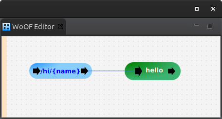

This tutorial walks you through creating and running your first Web on OfficeFloor (WoOF) application.
To create a Web on OfficeFloor (WoOF) project use the Maven WoOF archetype. Run the following within an empty directory:
mvn archetype:generate -DarchetypeGroupId=net.officefloor.maven -DarchetypeArtifactId=woof-archetype
Select net.officefloor.maven:woof-archetype (if not already selected) and provide the Maven configuration parameters. The tutorial uses the following parameters:
groupId=your.domain artifactId=HelloWorld version=0.0.1-SNAPSHOT package=your.domain
The application is configured through the application.woof file. Opening this file will provide the following graphical configuration for this tutorial's application. See install for adding the OfficeFloor plugin to your favourite IDE.
The very simple configuration shows servicing a REST call. This is a simple application with the following code:
package your.domain;
import lombok.Value;
import net.officefloor.web.HttpPathParameter;
import net.officefloor.web.ObjectResponse;
public class HelloLogic {
public void hello(
@HttpPathParameter("name") String name,
ObjectResponse<Message> response) {
response.send(new Message("Hello " + name));
}
@Value
public static class Message {
private String message;
}
}
Please see the other tutorials for explanation of the code and the further features available.
The following test shows the ease in which to start and stop the application for testing.
package your.domain;
import org.junit.jupiter.api.Test;
import org.junit.jupiter.api.extension.RegisterExtension;
import net.officefloor.server.http.mock.MockHttpResponse;
import net.officefloor.server.http.mock.MockHttpServer;
import net.officefloor.woof.mock.MockWoofServerExtension;
public class RunApplicationTest {
@RegisterExtension
public MockWoofServerExtension server = new MockWoofServerExtension();
@Test
public void ensureApplicationAvailable() throws Exception {
MockHttpResponse response = this.server.send(MockHttpServer.mockRequest("/hi/UnitTest"));
response.assertResponse(200, "{\"message\":\"Hello UnitTest\"}", "content-type", "application/json");
}
}
OfficeFloor is fast enough to be started and stopped for unit testing. This is deliberate to enable use as scale to zero server. See the testing tutorial for further means of testing.
Once the project is built, run the following within the project directory to start the application:
mvn net.officefloor.maven:officefloor-maven-plugin:3.39.0:open
The application will be available at: http://localhost:7878/hi/World
To make the commands easier, add the following to your maven ~/.m2/settings.xml file:
<pluginGroups>
<pluginGroup>net.officefloor.maven</pluginGroup>
</pluginGroups>This will allow running the simpler command to start the application:
mvn officefloor:open
And the following to stop the application:
mvn officefloor:close
Congratulations you have just created and run your first application.
The next tutorial covers configuring flows.